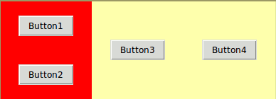

We're continuing the theme of laying out buttons in a frame. In this question, you'll need to add fixed spacing between your widgets.
You need to write a function create_layout that takes a frame as its only argument and adds four buttons in the layout shown below.

The callback (command) for both buttons should be the pressed function.
This layout must be achieved using an additional Frame. You will probably want to look at the fill and expand keyword arguments to pack.
As in the previous questions, there is no need to create a tk app (the root window and frame will be initialised for you).
When you check your code a window should pop up showing your layout. Close the popup window before trying again or moving to a new problem.